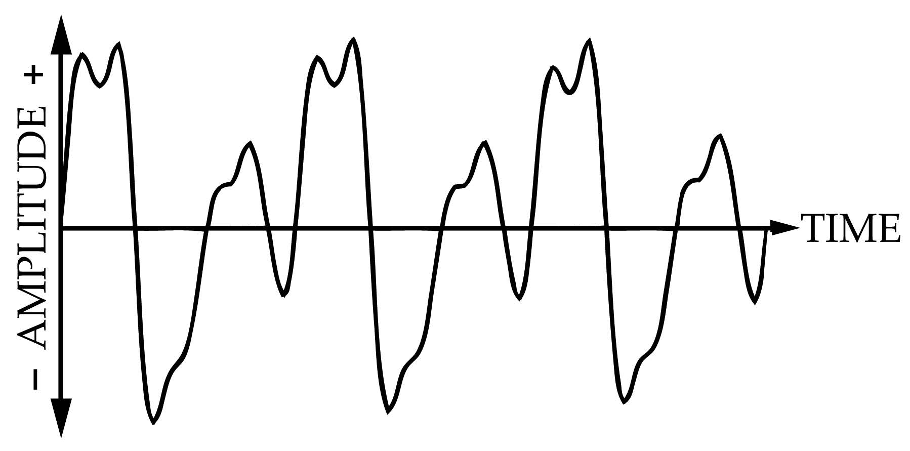

Цифровий аудіоформат — формат подання звукових даних, який використовується при цифровій звукозаписі, а також для подальшого зберігання записаного матеріалу на комп'ютері та інших електронних носіях інформації, так званих звукових носіях.
Аудіофайл (файл, який містить звукозапис) — комп'ютерний файл, що складається з інформації про амплітуду і частоту звуку, збереженої для подальшого відтворення на комп'ютері або програвачі.
Загальний принцип збереження аудіо на цифрових носіях полягає у послідовній фіксації значень амплітуди звукових коливань, які при відтворенні звуку відповідатимуть положенню мембран у гучномовцях. Ці значення записуються з певною частотою дискретизації та певним амплітудним розділенням. Для зменшення обсягів, ці дані можуть бути стиснені з втратами або без втрат.